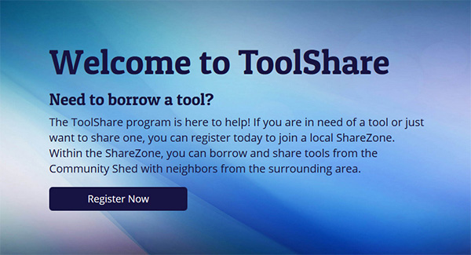
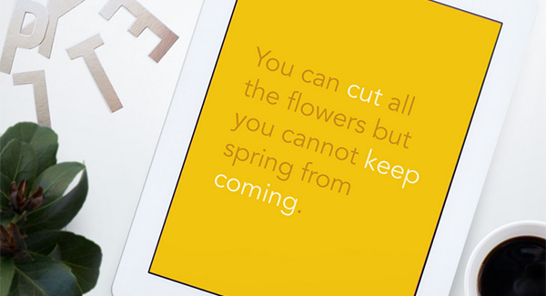
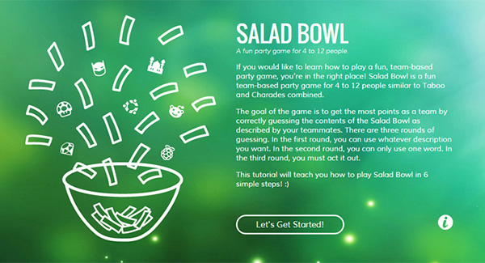
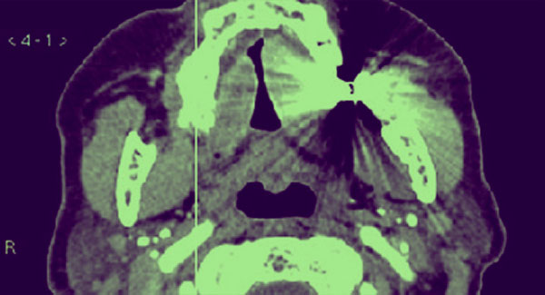
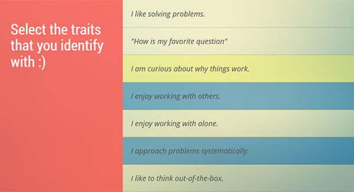
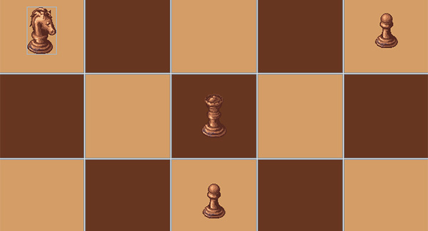
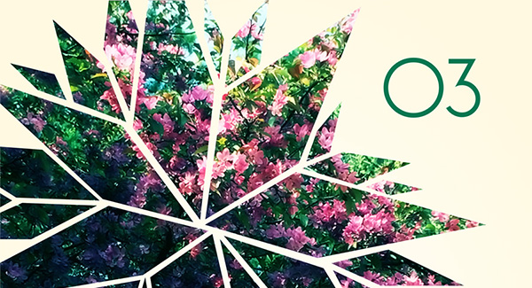
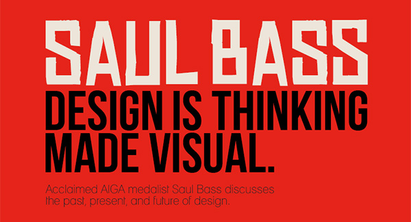
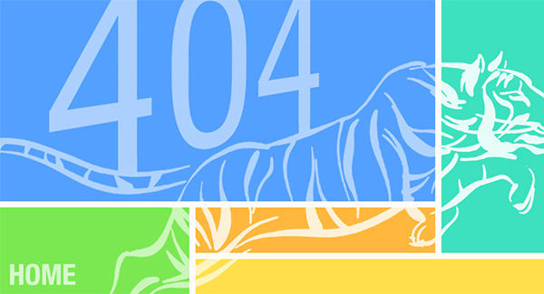
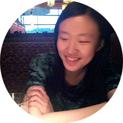

Welcome :)
I'm Cailin, a student at RIT who's interested in
mobile development, web development, and
human computer interaction.
Development
Java | Python | Objective-C | HTML | CSS | JavaScript






Design
Adobe Illustrator | Adobe Photoshop




About Me
Hi there! I'm a third year student at Rochester Institute of Technology studying Software Engineering and New Media Interactive Development. I enjoy designing and developing interactive applications. My goal as a software engineer is to build maintainable systems and bring them to life with intuitive interfaces.
I am interested in Software Engineering opportunities through which I can challenge myself, gain new skills, and learn more about the software engineering process.
Contact
cailin@mail.rit.edu